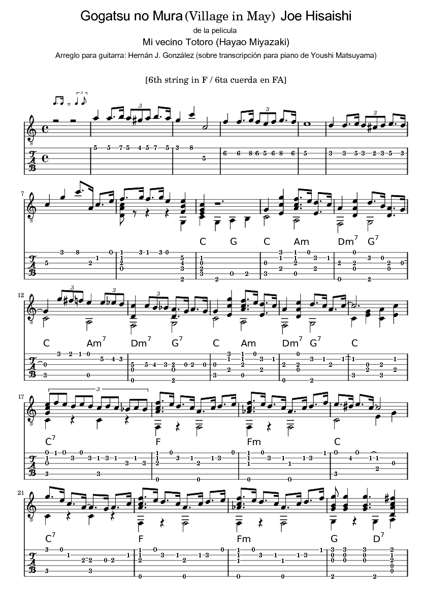
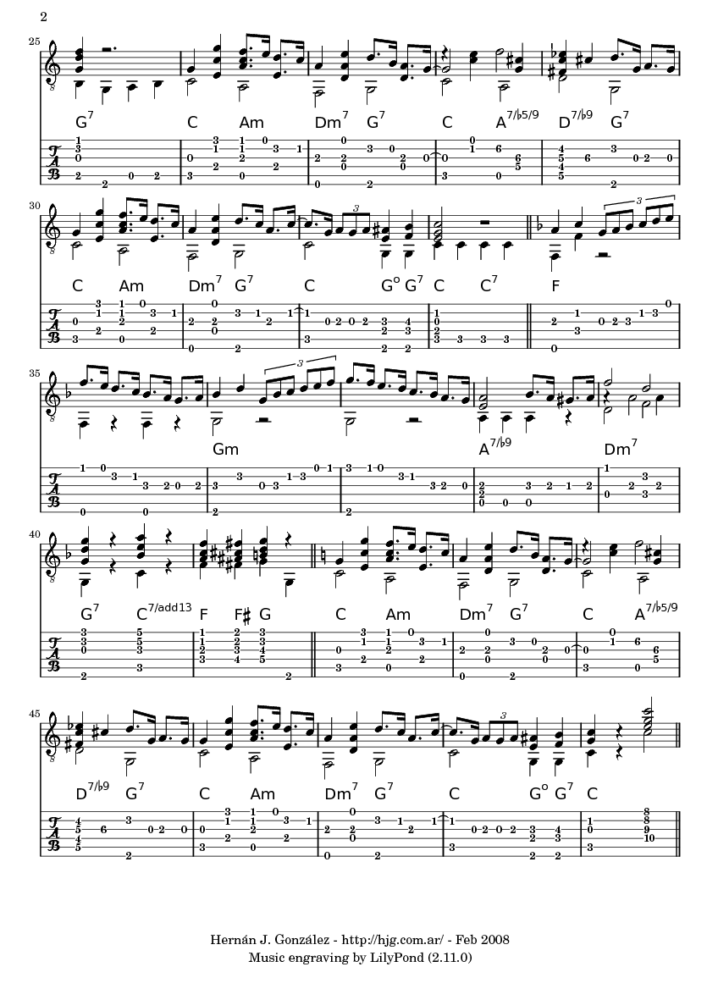

Village in May (Gogatsu no Mura)
de Joe Hisaishi
De la película "
Mi vecino Totoro
" (Tonari no Totoro), de Miyazaki
Mi arreglo para guitarra.
PDF
·
video
más partituras
·
Mi sitio Ghibli
 
PDF
·
video
más partituras
·
Mi sitio Ghibli
By:
Hernán J. González
hgonzalez@gmail.com